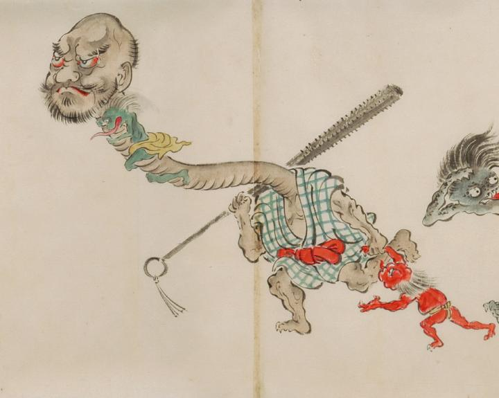

朝日から逃げる化物たち。入道のような顔をした化物が朝日から逃げている。首は長く伸び、肩に金棒を担いでいる。首には、長い舌をだした小さな化物がしがみついている。入道の左手には、赤い小鬼のような化物が連れられ一緒に逃げている。
出典：親書誌：U426_nichibunken_0053：化物婚礼絵巻；バケモノコンレイエマキ／日付：2006／資源識別子：U426_nichibunken_0053_0028_0000
Copyright (c)2010- International Research Center for Japanese Studies, Kyoto, Japan. All rights reserved.